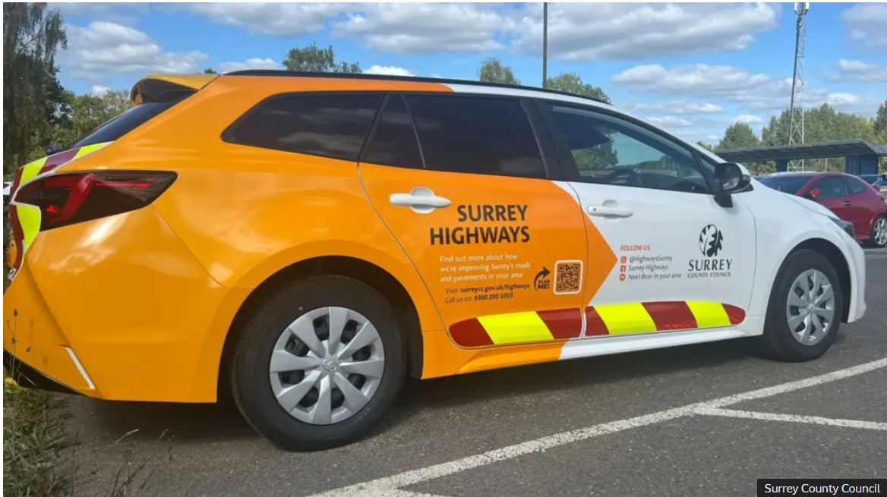

Surrey County Council will use AI to detect potholes and speed up road repairs, making the process more efficient and safer.
How it Works
Computer vision cameras fitted to dashboards in Surrey Highways vehicles will spot and photograph potholes, automatically recording them for repair.
Future Enhancements
Planned upgrades include detecting other road issues like missing signs and overgrown foliage, which will also be flagged for repair.
The council explained that highway inspectors would no longer need to step onto the road, making the process safer and more efficient.
Investment and Goals
Matt Furniss, Surrey's cabinet member for highways, announced a £300m investment to improve the county's roads until 2028.
